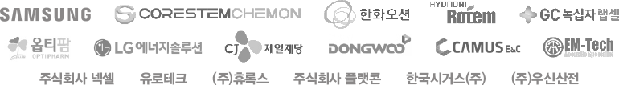

탁월한 성과가 증명하는
충북대학교의 가치
(2020-2023)
충북대학교는 대학의 우수한 교육·연국 역량이 지역사회의 발전으로 이어질 수 있도록 창의와 혁신을
거듭하며 도전하고 있습니다. 이는 각 분야의 괄목할 만한 성과와 외부 평가 등 다양한 영역에서 그 가치를 증명하고 있습니다.
-
2023
1위
WURI RANKING
‘4차 산업혁명 부문’ 국내 1위
THE Impact Rankings
‘양질의 교육’ 거점대 공동 1위
2023 대학정보공시
교원 1인당 기술이전 수입료 거점국립대학교 1위
2023 대학정보공시
교원 1인당 특허 등록 건수 거점국립대학교 1위 -
2022
1위
QS 아시아대학평가
‘박사학위 교원’ 거점대 1위
중앙일보 대학평가
4개 부문 거점대 1위
• 등록금 대비 교육비 지급률
• 중도포기율(거점대 최하)
• 과학기술 교수당 기술이전 수입료
• 자연과학계열 학생교육 부문
대학정보공시
‘사회봉사역량’ 거점대 1위
‘신입생충원현황’ 거점대 1위
국공립대학 종합청렴도 평가 1등급2위
중앙일보 대학평가
2개 부문 거점대 2위
• 등록금 대비 장학금 지급률
• 학생 창업지원 및 성과지원금
대학정보공시
‘재학생충원율’ 거점대 2위한국대학평가원
대학기관평가인증 ‘인증’ 취득 -
2021
한국교육개발원 대학기본역량진단
‘일반재정지원대학’ 선정 -
2020
1위
한국표준협회(KS-SQI)
‘친절성’ 거점대 1위

충북대학교 뉴스센터
다양한 재정 지원사업이 뒷받침하는
최적의 교육 및 연구 환경
(2020-2023 수주)
충북대학교의 사업 추진 역량과 연구 인프라는 다양한 정부 재정 지원 사업의 수주로 이어지고 있습니다.
정부의 교육 및 연구지원 사업, 민간 연구 사업 등 연간 약 1,540억 원을 유치하여
융복합 창의 인재 양성에 집중 투자하고 있습니다. 또한, 지속 가능한 연구 생태계를 구축하여 글로벌
경쟁력을 갖춘 대한민국 중추 대학으로 거듭나기 위해 노력하고 있습니다.
-

- 지자체-대학 협력기반 지역혁신 사업
- 2,246억 원
- 4단계 BK21사업
- 734억 원
- 국립대학 육성사업
- 373억 원
- 대학혁신지원사업
- 201억 원
-
첨단분야혁신융합대학사업
(이차전지 145억원 / 미래자동차 40억 원) - 185억 원
- 반도체 특성화대학 지원사업
- 168억 원
- 3단계 산학연협력선도대학육성사업
- 165억 원
- 디지털혁신공유대학사업
- 43억 원
- BRIDGE+사업
- 34억 원
- 고교교육기여대학지원사업
- 33억 원
-

-
2023년 학·연 협력 플랫폼 구축사업 선정
(차세대 전지 소재 분야) - 124억 원
- 지역혁신 선도연구센터사업
- 122억 원
- SW중심대학사업
- 99억 원
- 정보통신방송혁신인재양성사업
- 98억 원
- Grand ICT 사업
- 35억 원
-
2023년 학·연 협력 플랫폼 구축사업 선정
-

- 초기창업패키지사업
- 69억 원
- BI운영지원사업
- 3.8억 원
- 지역기술창업육성지원사업
- 2.9억 원
- BI보육역량강화지원사업
- 1.4억 원
-

-
산업혁신인재성장지원사업
융합기술사업화 확산형 전문인력양성사업 - 22억 원
- 지역특화청년무역전문가양성사업(GTEP)
- 7.5억 원
-
산업혁신인재성장지원사업
-

- 자율주행자동차 지역 테스트베드 구축사업
- 295억 원
-

- 권역 대학원격교육지원센터 운영사업
- 36억 원
-

- 지식재산 전문인력양성 중점 대학
- 25억 원
민간연구과제
286억 원
